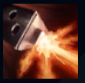

Corki
| Corki The Daring Bombardier | |
|---|---|
| Release date | 19.09.2009 |
| Class | Marksman |
| Positions | Middle |
| Resource | Mana |
| Range type | Ranged |
| Adaptive type | Physical |
| Base statistics | |||
| Health | 518 – 1997 | Mana | 350 – 1268 |
| Health regen. | 5.5 – 14.85 |
Mana regen. | 7.424 – 16.77 |
| Armor | 28 – 87.5 | Attack damage | 55 – 97.5 |
| Magic resist. | 30 – 38.5 | Crit. damage | 175% |
| Move. speed | 335 | Attack range | 550 |
Corki este un pilot yordle care iubește două lucruri mai presus de orice: zborul și mustața sa extraordinară... dar nu neapărat în ordinea asta. După ce a plecat din Orașul Bandle, s-a stabilit în Piltover și s-a îndrăgostit de minunatele mașinării pe care le-a găsit acolo. S-a implicat puternic în dezvoltarea dispozitivelor zburătoare, conducând forța de apărare aeriană Zburătorii Veseli, formată numai din veterani căliți în luptă. Corki patrulează înălțimile din jurul orașului de care s-a atașat, își păstrează calmul când e atacat și n-a întâlnit niciodată vreo problemă care să nu poată fi rezolvată cu o ploaie zdravănă de proiectile. | MUNIȚIE HEXTECH Un procent din daunele de bază din atac ale lui Corki sunt transformate în daune magice. Corki poate ridica ocazional coletul din bază, primind viteză de mișcare și o folosire îmbunătățită a ''Walkiriei'' |
|||
|---|---|---|---|---|
BOMBĂ CU FOSFOR Corki lansează o bombă fulgerătoare într-o locație-țintă, provocându-le daune magice inamicilor din zonă. În plus, acest atac dezvăluie pentru un timp unitățile din zonă. |
||||
WALKIRIE Corki parcurge în zbor o distanță scurtă și aruncă bombe ce continuă să ardă după ce ajung la sol, provocându-le daune inamicilor prinși în zona de acțiune. |
||||
|  |
MITRALIERĂ Mitraliera lui Corki trage rapid într-o zonă în formă de con din fața lui, provocând daune și reducând armura și rezistența la magie ale inamicilor. |
|||
PLOAIA DE PROIECTILE Corki lansează spre locația-țintă un proiectil care explodează la impact, provocându-le daune inamicilor din zonă. Corki stochează rachete în timp, până la un număr maxim. Fiecare al treilea proiectil lansat va fi ''Unul mare'' și va provoca daune suplimentare. |